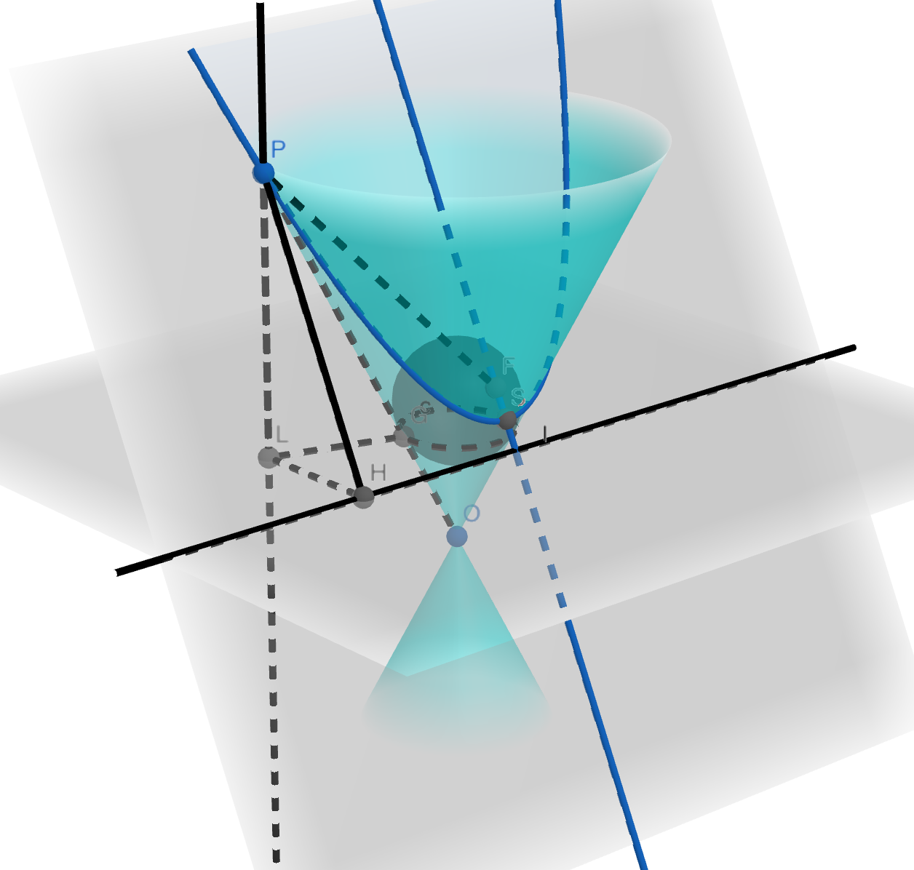
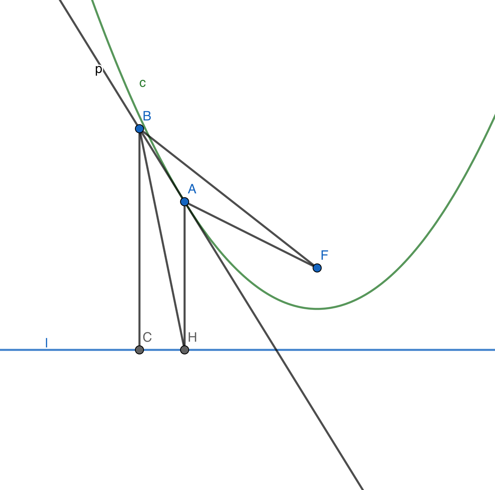
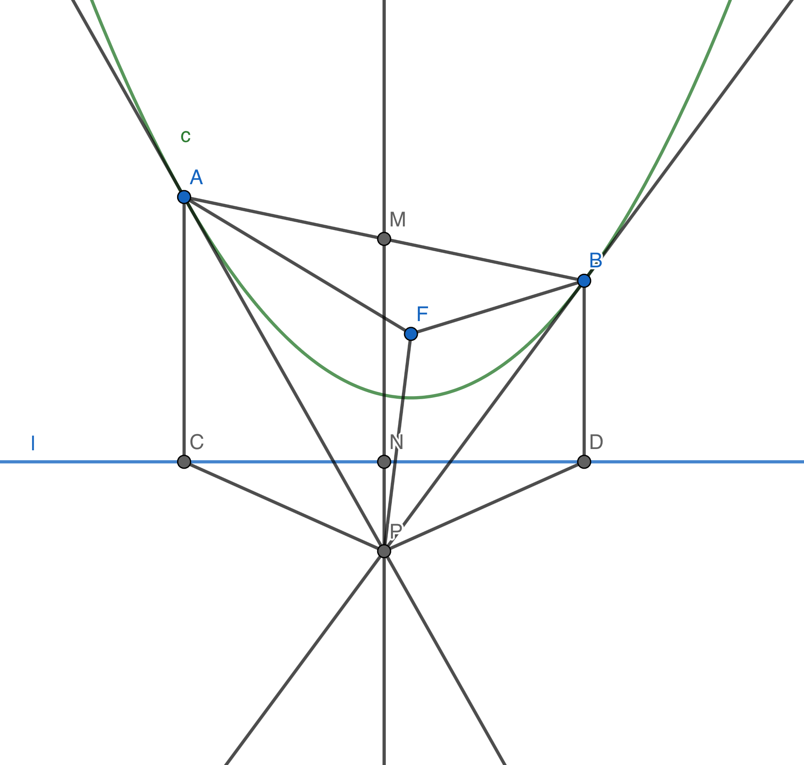
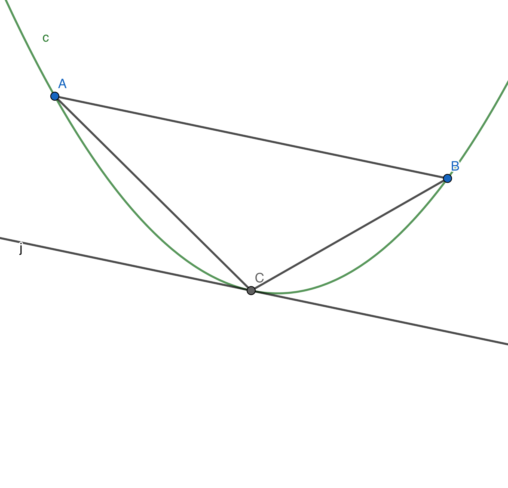
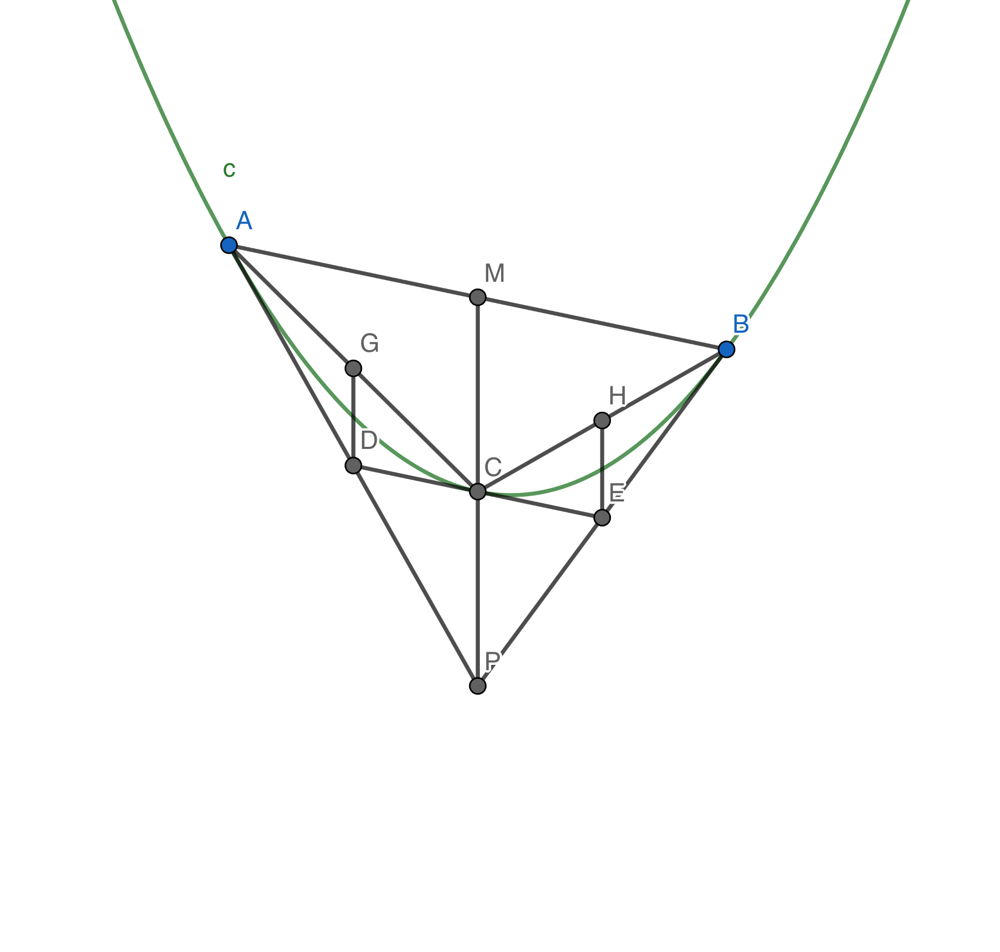
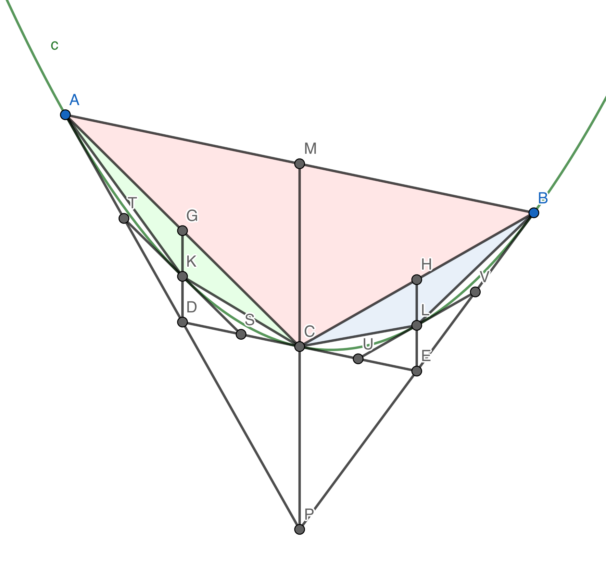

阿基米德是古希腊著名的数学家，有许多伟大的数学成就，其中之一就是运用穷竭法求出了抛物线弓形的面积。当然，在求解过程中，阿基米德运用了前人的结论，所以有可能他自己不能给出完整的证明。我们不知道阿基米德在一些具体细节上使用的是什么方法，但我们可以尝试不用解析几何工具，利用抛物线的几何性质来求解。
抛物线有下面两种定义：
古希腊的学者们主要运用的是圆锥曲线定义来探究问题，对于我们而言焦点准线定义可能更为直观。事实上这两种定义是等价的（冰激凌定理），我们可以尝试证明：

如图，以 O 为顶点的圆锥面被平面 π 所截得到以 S 为顶点的抛物线。作球与平面 π 和圆锥面都相切，设球与平面 π 相切于点 F，与圆锥面相切于圆 c，圆 c 所在平面 π' 与平面 π 交于直线 l，现在证明：抛物线上任意一点 P 到 F 的距离与 P 到直线 l 的距离相等。
设 P 在平面 π' 上的投影为 L，L 在直线 l 上的投影为 H，可以发现 PH 与直线 l 垂直；连接点 P 与圆锥面的顶点 O 交切圆 c 于 G，那么 PF 和 PG 为 P 到球的两的切线，因此 PF 与 PG 相等；根据抛物线定义可以得出，圆锥面的母线与平面 π' 所成夹角以及平面 π 与平面 π' 的夹角相等，于是 \(\angle PGL = \angle PHL\)；
综合以上，有 \(PH = \frac{PL}{\sin \angle PHL} = \frac{PL}{\sin \angle PGL} = PG = PF\)，命题得证。
在证明了定义的一致性后，我们就可以用平面上的焦点准线代替圆锥面和截面来推导抛物线的一些性质。
阿基米德在求解抛物线弓形的面积时，选取了弓形中最大的内接三角形作为标准，而这个最大三角形又和抛物线的切线息息相关，因此在开始计算面积之前，我们先用几何方法证明几个定理。
定理 1: 过抛物线 c 上一点 A 作准线 l 的垂线，垂足为 H，F 为抛物线的焦点，连接 AF，则 \(\angle FAH\) 的角平分线 p 为抛物线在 A 处的切线。

证明： 在 p 上取不同于 A 的一点 B，过 B 作准线 l 的垂线，垂足为 C，连接 BH,BF。
由于 \(\angle BAF = \angle BAH, AF = AH\)，所以 \(\triangle ABF \cong \triangle ABH\)，于是 \(BF = BH > BC\)，即 B 到焦点 F 的距离大于 B 到准线 l 的距离，故 B 一定不在抛物线上。
对于 p 上每个不同于 A 的点都不在抛物线上，因此 p 与抛物线有且仅有一个交点 A，即 p 为抛物线在 A 处的切线。
定理 1 将抛物线的切线与角平分线联系在一起，同时说明了抛物线的光学性质：从焦点出发的光线经抛物线反射后沿平行于对称轴的方向射出。
定理 2: 过抛物线 c 上两点 A, B 分别作抛物线的切线交于 P，连接 AB，过 P 作准线 l 的垂线交线段 AB 于 M，则 M 为 AB 的中点。

证明： 设 PM 交 l 于 N，过 A, B 分别作 l 的垂线，垂足分别为 C, D，连接 PC, PD, PF, AF, BF。
由定理 1 可以得到 AP, BP 分别为 \(\angle FAC, \angle FBD\) 的角平分线，又有 \(AF = AC, BF = BD\)，所以 \(\triangle APC \cong \triangle APF, \triangle BPD \cong \triangle BPF\)，于是就有 \(PC = PF = PD\)，再结合 \(PN \perp CD\) 得到 N 为 CD 中点，进而有 M 为 AB 中点。
定理 2 的证明过程其实给出了已知抛物线焦点和准线，过抛物线外一点 P 作抛物线切线 PA, PB 的方法。（先用 \(PC = PD = PF\) 确定点 C, D，再通过作垂线找出点 A, B）

回顾一下我们要解决的问题：求图中弦 AB 与抛物线围成弓形的面积。在求解之前我们必须确定一个标准来与弓形面积进行比较，阿基米德选取了图中的 \(\triangle ABC\) 为基准，其中 C 满足抛物线在 C 处的切线 j 与 AB 平行。阿基米德用穷竭法证明了弓形的面积是三角形面积的三分之四，我们也将运用类似的思想得到这个结果。

如图分别作 A, B 处的切线交于 P，过 P 作准线垂线交抛物线于 C'，交 AB 于 M，过 C' 的切线与 AP, BP 分别交于 D, E，过 D, E 作准线垂线分别交 AC', BC' 于 G, H。
对 ABP, AC'D, BC'D 分别应用 定理2 可以得到 M, G, H 分别为 AB, AC', BC' 中点。因此 DG, EH 分别为 \(\triangle APC', \triangle BPC'\) 的中位线，D, E 分别为 AP, BP 的中点，进而 DE 为 \(\triangle PAB\) 的中位线，即 \(DE \parallel AB\) 且 C' 为 PM 的中点。至此我们发现 C' 就是满足条件的 C 点！结合 \(CM = \frac{1}{2} PM\) 就可以得到 \(S_{\triangle ABC} = \frac{1}{2} S_{\triangle ABP}\)。这是穷竭法求抛物线弓形面积的重要基础，会不断使用到这个结论。
在这里我们可以发现 \(\triangle ACD, \triangle BCE\) 和 \(\triangle ABP\) 都是由两条切线和一条弦围成的三角形，于是我们可以对两个小三角形进行同样的操作：

类似地，我们可以得到 \(S_{\triangle ACK} = \frac{1}{2} S_{\triangle ACD}, S_{\triangle BCL} = \frac{1}{2} S_{\triangle BCE}\)。将两者相加，我们有
\(S_{\triangle ACK} + S_{\triangle BCL} = \frac{1}{2} (S_{\triangle ACD} + S_{\triangle BCE}) = \frac{1}{2} (S_{\triangle PCD} + S_{\triangle PCE}) = \frac{1}{2} S_{\triangle PDE} = \frac{1}{4} S_{\triangle ABC}\)
有了这个式子，我们就可以无穷无尽地推导下去，每一次新增添的小三角形面积之和，都是上一次添加的 \(\frac{1}{4}\)。而当我们添加这些小三角形时，所有三角形的面积之和（图中的上色部份，\(\sum_{i = 0}^{n} (\frac{1}{4})^i S_{\triangle ABC}\)）会和抛物线弓形面积越来越接近。
或许有的人很想说“抛物线弓形面积就是无穷多个这样的三角形面积之和”，但我们最好不要这么做，因为涉及无穷的概念时，“是”字往往不准确。真正严谨的说法是：“三角形面积之和与抛物线弓形面积的差异不断减小，以至于可以小于任何一个给定的正数”。从图中我们不难发现，抛物线弓形面积与所有三角形面积之和的差满足下面这个式子：
\(0 < \Delta = S_{抛物线弓形} - \sum_{i = 0}^{n} (\frac{1}{4})^i S_{\triangle ABC} < \frac{1}{2} (\frac{1}{4})^nS_{\triangle ABC}\)
因此，对于任何一个给定正数 ξ，总是存在 n 使得 $|\Delta| < \xi$，这正是极限的现代定义法，于是我们可以写成
\(S_{抛物线弓形} = \lim_{n \rightarrow + \infty} \sum_{i = 0}^{n} (\frac{1}{4})^i S_{\triangle ABC} = \lim_{n \rightarrow + \infty} (\frac{4}{3} - \frac{1}{3} \frac{1}{4^n}) S_{\triangle ABC} = \frac{4}{3} S_{\triangle ABC}\)
到这里，我们得到了阿基米德的结论。
阿基米德在用穷竭法证明抛物线弓形面积之前，用了杠杆原理已经得到了三分之四的答案，但在这位严谨的数学家看来，杠杆法只能算是探究而不是证明。从现在来看，我们有解析几何工具和微积分技巧，似乎很容易就可以求得抛物线弓形的面积，但在没有解析几何和微积分的时代，阿基米德等古希腊人运用穷竭思想做到了我们现在用微积分做的事。这无疑是古希腊数学的一项伟大的成就。
在证明抛物线切线的性质时，我们几乎没有用到解析几何的方法，而是通过纯几何的技巧得到结果。与解析几何相比，纯几何一般不需要太多繁琐的计算，有时也更能直观地体现图形的美妙，尤其是在圆锥曲线之中。高中学习的圆锥曲线大多都是在直角坐标系中的二元二次方程，时不时就会涉及一些并不好处理的方程。在这种时候，纯几何正如一条不易发现的捷径，可以绕过大道上的阻碍，直通目标。因此，在解析几何的各种方程中纠缠不清时，不妨从头开始，试试纯粹的几何学，说不定可以有新的发现。